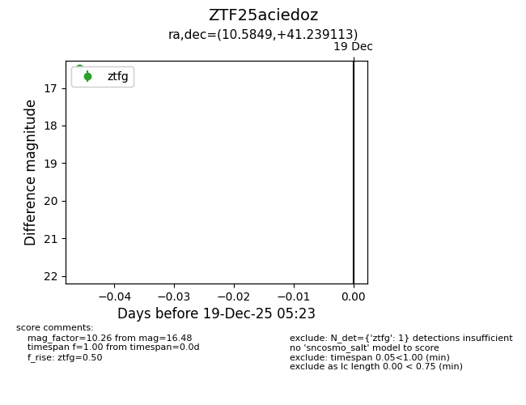
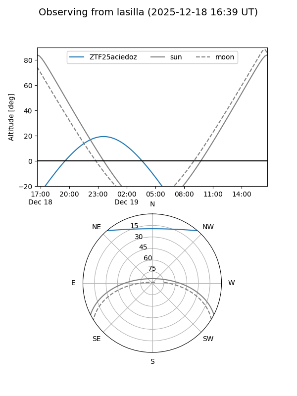
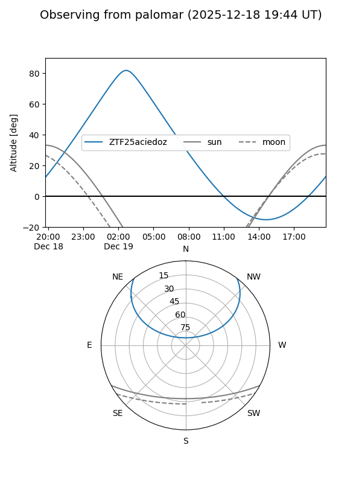

ZTF25aciedoz
Target ZTF25aciedoz at 2025-12-19 05:24
Aliases and brokers:
FINK: fink-portal.org/ZTF25aciedoz
Lasair: lasair-ztf.lsst.ac.uk/objects/ZTF25aciedoz
ALeRCE: alerce.online/object/ZTF25aciedoz
alt names
ZTF25aciedoz (ztf,fink_ztf)
Coordinates:
equatorial (ra, dec) = 10.5849,+41.23911
equatorial (HMS+DMS) = 00:42:20.38,+41:14:20.81
galactic (l, b) = (121.0925,-21.60014)
Flags:
Photometry:
last ztfg=16.48
1 ztfg detections
Lightcurve

Visibility


Additional plots